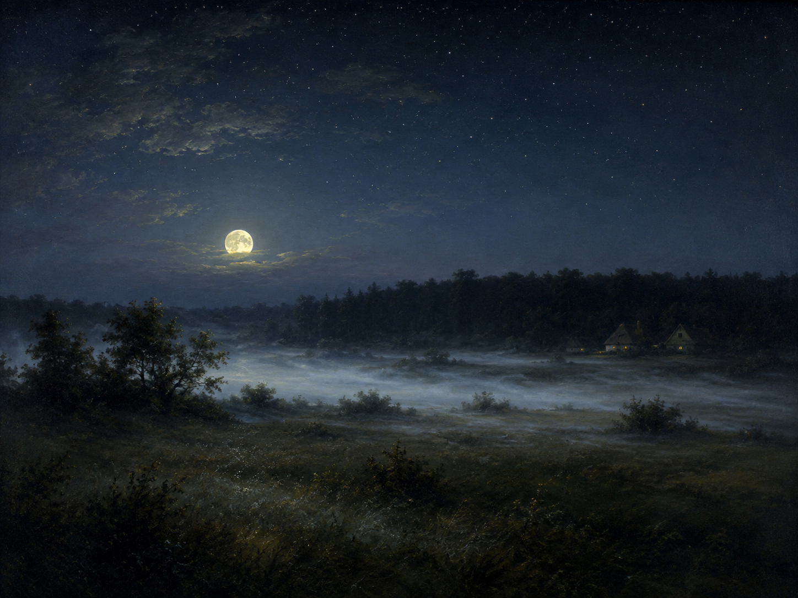

Der Mond ist aufgegangen,
全诗以现在完成时开篇（aufgehen 的完成时用 sein 作助动词），描述一个刚刚完成、结果仍在眼前的状态。此句化自保罗·格哈特1647年圣诗《Nun ruhen alle Wälder》第三节首行 "Der Tag ist nun vergangen / die güldnen Sternlein prangen"，克劳迪乌斯只改了第一行——这是德语文学中最著名的一次"改写致敬"。
晚歌（月亮已经升起）
《万茨贝克信使全集》第四部（Asmus omnia sua secum portans, 1783）
感伤主义（Empfindsamkeit）／启蒙晚期
约1778年作于汉堡万茨贝克（一说更早作于达姆施塔特），1778年刊于《缪斯年鉴 1779》

图片由 AI 生成
Der Mond ist aufgegangen,
全诗以现在完成时开篇（aufgehen 的完成时用 sein 作助动词），描述一个刚刚完成、结果仍在眼前的状态。此句化自保罗·格哈特1647年圣诗《Nun ruhen alle Wälder》第三节首行 "Der Tag ist nun vergangen / die güldnen Sternlein prangen"，克劳迪乌斯只改了第一行——这是德语文学中最著名的一次"改写致敬"。
Die goldnen Sternlein prangen
Sternlein 是 Stern 的指小形式（-lein），带亲切、稚拙的语感，也是虔敬主义（Pietismus）常用词。prangen 意为"炫耀般地闪现、盛装呈现"，今已近乎古语。goldnen 为 goldenen 的省音形式。
Der Wald steht schwarz und schweiget,
schweigen（沉默）用于森林是拟人。schweiget 为诗歌延长形式（今 schweigt）。此行与下一行的 steiget 押韵，是全诗最常被引用的句子之一（2012年德国《犯罪现场》有一集即以此为剧名）。
Und aus den Wiesen steiget / Der weiße Nebel wunderbar.
语序为状语—动词—主语（Der weiße Nebel 在动词之后）。wunderbar 在此为副词，修饰 steiget（"奇异地升起"），而非定语。德国作家阿克塞尔·哈克曾以某个孩子把这两行听成 "der weiße Neger Wumbaba"（白人黑人翁巴巴）为题写成一本关于听错歌词的书，可见此句在德语文化中的普及程度。
Und in der Dämmrung Hülle
前置第二格："in [der Dämmrung] Hülle" = "in der Hülle der Dämmerung"（在暮色的包裹之中）。Dämmrung 为 Dämmerung 的省音形式，指黎明或黄昏的微光时分。
Wo ihr des Tages Jammer / Verschlafen und vergessen sollt.
关系从句，动词 sollt 后置于末尾。des Tages Jammer 又是一个前置第二格（= der Jammer des Tages 白日的愁苦）。注意人称：全诗至此突然出现第二人称复数 ihr——说话者是一位对家人／会众讲话的"家父"，这一角色是理解全诗语气的关键。
Seht ihr den Mond dort stehen? –
第三节是全诗的思想核心，也是它区别于一般晚祷诗的地方。这里以最日常的观察（半月其实是圆的）引出一个认识论论点：看不见并不等于不存在。这一转折使全诗从自然描写进入沉思。
Die wir getrost belachen,
getrost 意为"心安理得地、放心大胆地"（而非"被安慰"）；belachen 为及物动词"嘲笑某事"。这两行是对启蒙理性自信的温和批评：我们嘲笑的许多事情，只是因为我们看不见它们的全貌。
Sind eitel arme Sünder,
eitel 在此不是常见的"虚荣的"，而是路德《圣经》中的古义"纯然、不过是"（如 "es ist alles ganz eitel" 传道书"凡事都是虚空"）。整句意为"无非是可怜的罪人"。这是全诗最容易误读的一个词。
Wir spinnen Luftgespinnste
Luftgespinst（空中的织物／幻想）是罕见的复合词，由 Luft + Gespinst（蛛网般的织物，来自 spinnen 纺织）构成，与动词 spinnen 构成同源反复（"纺织空纺之物"）。spinnen 在口语中另有"发疯、胡说"之义。1779年《缪斯年鉴》版此处作 Luftgespinste，1783年版作 Luftgespinnste，拼写略异。
Auf nichts Vergänglichs trauen,
auf etwas trauen（今多作 auf etwas vertrauen）意为"信靠某物"。nichts Vergänglichs 是"nichts + 形容词名词化"结构，词尾 -s 为省音形式（今作 nichts Vergängliches）："任何易逝之物"。
Wie Kinder fromm und fröhlich seyn!
seyn 为18世纪 sein 的旧拼法。fromm（虔敬）与 fröhlich（快乐）的并置是本诗的核心价值取向——虔敬不是苦修，而是孩童式的、轻快的信赖。头韵（fromm–fröhlich）加强了这一效果。
Wollst endlich sonder Grämen
Wollst 是 wollen 的第一虚拟式（Konjunktiv I）第二人称单数，用于表达祈愿（"愿你……"），今已仅存于祷词与固定表达中。sonder 是古老的介词，意为"没有、免于"（同英语 without、法语 sans），支配第四格；今仅存于 sonderbar、sondern 等派生词中。das Grämen 为动词 sich grämen（忧伤）的名词化。
Laß uns im Himmel kommen,
1783年版此处作 "im Himmel"（第三格），从现代语法看应为 "in den Himmel"（第四格，表方向）——1779年《缪斯年鉴》版正作 "in Himmel"。这属于18世纪的用法波动，也可能是排印之误，本站保留1783年版原样并在此说明。
So legt euch denn, ihr Brüder,
sich legen（躺下）的第二人称复数命令式，可分前缀 nieder 落在下一行（niederlegen）。denn 在此为语气词，表示"那么、既然如此"。全诗至此从祈祷回到具体的睡前动作。
Und unsern kranken Nachbar auch!
全诗最著名的一行。经过六节关于宇宙、罪、死亡与天国的宏大言说之后，最后一句突然缩小到隔壁那位生病的邻人身上。这一"缩小"被公认为全诗最动人的笔法。2017年德国语言协会曾因新教教会将此行改为"也让所有生病的人"（性别中立版）而颁发"年度语言糟蹋者"负面奖，可见这一行在德语文化中的分量。
| Infinitiv | Präsens 3. Sg. |
Präteritum | Perfekt | Partizip II | Konjunktiv II | Hilfsverb |
|---|---|---|---|---|---|---|
| aufgehen | geht auf | ging auf | ist aufgegangen | aufgegangen | ginge auf | sein |
| ↳ 诗中首行用现在完成时 "ist aufgegangen"，强调升起后的当下状态。 | ||||||
| schweigen | schweigt | schwieg | hat geschwiegen | geschwiegen | schwiege | haben |
| ↳ 强变化（ei–ie–ie）；诗中用延长形式 schweiget（今 schweigt）。 | ||||||
| steigen | steigt | stieg | ist gestiegen | gestiegen | stiege | sein |
| ↳ 诗中延长形式 steiget，与 schweiget 押韵。 | ||||||
| verschlafen | verschläft | verschlief | hat verschlafen | verschlafen | verschliefe | haben |
| ↳ 前缀 ver- 在此表"通过睡眠而消除"；日常义为"睡过头"（Ich habe verschlafen）。 | ||||||
| lassen | lässt | ließ | hat gelassen / hat … lassen | gelassen / lassen | ließe | haben |
| ↳ 诗中多次用命令式 Laß（今 Lass），构成祈祷句"让我们……"（Laß uns + 不定式）。 | ||||||
| wollen | will | wollte | hat gewollt | gewollt / wollen | wollte | haben |
| ↳ 诗中第六节首词 Wollst 为第一虚拟式第二人称单数（愿望式），今仅存于祷词与固定表达。 | ||||||
| sich niederlegen | legt sich nieder | legte sich nieder | hat sich niedergelegt | niedergelegt | legte sich nieder | haben |
| ↳ 可分动词；诗中命令式 "legt euch … nieder"，前缀跨行落在下一行。 | ||||||
| verschonen | verschont | verschonte | hat verschont | verschont | verschonte | haben |
| ↳ "jemanden mit etwas verschonen" 意为"免除某人某事"；诗中命令式作 Verschon’（省去 -e）。 | ||||||
in der Dämmrung Hülle / des Tages Jammer
Wollst endlich sonder Grämen / Aus dieser Welt uns nehmen
Die goldnen Sternlein prangen
Seht ihr den Mond …? / Laß uns einfältig werden / So legt euch denn, ihr Brüder, / Verschon’ uns, Gott!
《晚歌》1778年首刊于约翰·海因里希·福斯主编的《缪斯年鉴 1779》，此后几乎没有一部德语诗选会漏掉它。1783年克劳迪乌斯本人把它收入《万茨贝克信使全集》第四部，并修改了第六节的最后一行。它的蓝本是保罗·格哈特1647年的圣诗《Nun ruhen alle Wälder》——克劳迪乌斯本打算让自己的诗按同一旋律演唱，因此两首在格律与韵式上完全一致（六行诗节，尾韵 aabccb，第三、六行构成"尾韵包" Schweifreim）。1790年约翰·亚伯拉罕·彼得·舒尔茨在《以民歌风格演唱的歌曲》中为它谱写的旋律，使它进入德语歌唱曲目的核心，今天新教《福音赞美诗集》（EG 482）与2013年起的天主教《赞美上帝》（Gotteslob 93）都以此曲收录。全部谱曲版本超过70种，舒伯特1816年11月也写过一首（D 499）。
这首诗长期在评价上存有争议：一些读者只看到"孩童式的虔敬"，因其所谓的天真与浅白而拒斥它；恩斯特·维歇特则赞赏它质朴而在手艺上极为高明，认为简单本身正是一种风格手段。文学学者温弗里德·弗罗因德指出，它与其说是一首田园诗，不如说是一首死亡之诗——只不过是在一个信者的救恩期待背景之下写成的。最广为传唱的通常只有第一、二、三与最后一节，中间几节谈罪、谈死、谈天国的部分反而常被略去；赫尔德早在收录此诗进《民歌集》时就已删去最后两节。
它在德语文化中的地位可由几个细节看出：赫尔穆特·施密特生前指定在自己2015年的追思礼拜上唱这首歌；安塞尔姆·基弗1971年画过一幅题为《月亮已经升起》的作品；2020年新冠疫情初期，德国福音教会曾邀请所有人每晚19点在阳台合唱此曲。也正因如此，它被戏拟的次数同样惊人，其中最著名的是彼得·吕姆科夫1962年的《对马蒂亚斯·克劳迪乌斯〈晚歌〉的变奏》。
中文译文为本站学习译文（AI 辅助），采用直译。需要特别说明的是第四节 "Sind eitel arme Sünder" 中的 eitel：此处并非今义的"虚荣"，而是路德《圣经》语言中的"纯然、不过是"，译文作"无非是可怜的罪人"；而第五节的名词 Eitelkeit 则取今义"虚荣"，译文作"虚荣"——同一词根在同一首诗中两义并用，是本诗翻译中最需要留心之处。此外，译文保留了第七节末行由宏大祈祷突然收缩到"生病的邻人"这一落差，未作任何铺垫或修饰。本诗因作者1815年逝世，德文原文早已进入公有领域；已知存在多个中文译本，因版权原因本站不转载具体译本全文。
德文正文通过两个独立来源核对：German Wikipedia 同时转录了1779年《缪斯年鉴》版与1783年《万茨贝克信使全集》第四部版，gedichte7.de 提供了一个现代化排印的通行本。七节各六行的结构在所有版本中一致。已核实的版本差异如下：(1) 作者本人的修订：1779年版第六节末行作 "Du lieber treuer frommer Gott!"，1783年版改为 "Du unser Herr und unser Gott!"；Wikipedia 注释明确指出克劳迪乌斯1783年收入全集时修改了第六节第六行。本站从1783年作者手定版。(2) 标点与分行细节：1779年版第3行末为冒号、第13行末无破折号、第15行末为句号，1783年版分别作句号、破折号、感叹号；本站从1783年版。(3) 正字法：1783年版保留 seyn（今 sein）、Luftgespinnste（1779年版作 Luftgespinste）、laß（今 lass）等旧拼法，本站予以保留。(4) 一处语法疑点：1783年版第六节第五行作 "Laß uns im Himmel kommen"（第三格），而1779年版作 "Laß uns in Himmel kommen"；按现代语法表方向应为 "in den Himmel"。本站保留1783年版原样并在逐行注释中标明，但此处究竟是18世纪的用法波动还是排印之误，本站未能确定，属待核实项。(5) 另需说明：新教《福音赞美诗集》（1993）将第五节首行改作 "Gott, laß dein Heil uns schauen"，天主教《赞美上帝》（2013）作 "Gott, lass uns dein Heil schauen"，两者均标注为"教会合一"版本；本站采用克劳迪乌斯原诗的语序，不采教会歌本的改动。本站未直接查阅1778年《缪斯年鉴》与1783年全集的影印件，上述采择依据 Wikipedia 的转录（该词条已给出两版的 Google Books 数字化链接），建议有条件的读者对照原书核实。
【来源独立性复核（2026年8月）】本站在第四批录入时发现并确认：本诗所引 gedichte7.de 与 zgedichte.de 属同一运营方（Heiko Possel），依 SOURCES.md 规则 B 不可充当两个必需来源之一，且依第 4 节属三级来源；去掉三级来源后，本诗仅剩 1 个独立来源组（wikimedia）。需要说明的是，本诗的德文正文此前**并非只有单一来源**——上列各来源之间的逐词比对确已完成，比对结果如上文所载，本站不撤回任何已记录的比对结论。但按本项目现行的《来源独立性规范》（见仓库根目录 SOURCES.md），本诗的来源配置尚未达标，**补入一个额外的独立来源属未完成事项**，已列入下方 checklist。在补齐之前，请读者将本诗的文本可信度视为低于本站其他已达标条目。